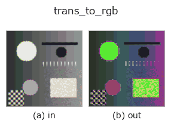

color op• Datenarten: color → color
• Aufruf: fullseye.apply(img, "trans_to_rgb", a=0.5, b=0.5) (das 2-D-Modell ist ein Bild plus zwei skalare Regler a,b∈[0,1])
• HALCON-Äquivalent: trans_to_rgb (Bedeutung und Parameter sind in der HALCON-Referenz nachzulesen)

*Die Abbildung ist die tatsächliche Ausgabe auf einer synthetischen 128×128-Eingabe. Links Eingabe, rechts Ausgabe. Punktwolken als Draufsicht-Streudiagramm (Helligkeit = z), 1-D-Reihen als Linie, Volumen als Maximum-Projektion entlang z, Videos als mittleres Bild, komplexe Bilder als Betrag; Rückgabewerte, die kein Bild ergeben, werden als Werte gezeigt.*
*Regler a ändert die Ausgabe nicht (gemessen: identisch bei 0,1 / 0,5 / 0,9).*
*Regler b ändert die Ausgabe nicht (gemessen: identisch bei 0,1 / 0,5 / 0,9).*
Stufen (die vorangehenden Ops → dieser Op, von links nach rechts):
▸ trans_to_rgb: Stufen (Doku-Website)
Auf anderen Bildern (synthetische Szene / Foto / Münzen. Obere Reihe: Eingaben, untere Reihe: deren Ausgaben. Regler auf Standard):
▸ trans_to_rgb: andere Eingaben (Doku-Website)
Die inverse Transformation von einem Farbraum zurück nach RGB. Soll HALCONs trans_to_rgb (Umwandlung von einem beliebigen Farbraum in den RGB-Farbraum) entsprechen, die Implementierung unterstützt jedoch nur die eine Richtung HSV nach RGB.
Während trans_from_rgb mit a zwischen 4 Farbräumen (HSV/Lab/YUV/XYZ) wählen kann, behandelt diese Rücktransformation die Eingabe stets als HSV und wendet cv2.COLOR_HSV2RGB an. Wird sie auf Lab/YUV/XYZ aufgerufen, wandelt sie mit falscher Interpretation des Farbraums um, sodass die Ausgabe kaputte Farben hat. a, b werden nicht verwendet.
• Leitfaden zur Familie gallery2d_color_artistic
• colorimetry — Farbmetrik und Spektren — Farbe ist nur durch Spektrum × Lichtart × Beobachter bestimmt
• Katalog der Beispieldaten (Download-URLs / Lizenzen) — 2-D nutzt skimage.data (BSD/Public Domain) plus synthetische Bilder, 3-D nennt Download-URLs echter Datenquellen (Stanford, PDS, …).
• Herkunft und Literatur der Operatoren — die Quellen der Forschung/Verfahren, auf denen diese Operatorfamilie beruht.
• Der kanonische Algorithmus (Autor, Jahr) und seine Anwendungen stehen im Familienleitfaden oben.
Das Programm unten ist nachweislich lauffähig (gleiche Eingabe wie die Abbildung). In der Studio-Hilfe wird dieser Block zu Schaltflächen, die es sofort laden und ausführen.
cfa_to_rgb 0.50 0.50 trans_to_rgb 0.50 0.50
▸ Diese Pipeline laden · Laden & ausführen
• gallery2d_color_artistic — py -3.11 examples/gallery2d_color_artistic.py
color als Eingabe)identity · trans_from_rgb · linear_trans_color · principal_comp · rgb1_to_gray · rgb3_to_gray · access_channel · edges_color
color)cfa_to_rgb · trans_from_rgb · linear_trans_color · principal_comp · rgb1_to_gray · rgb3_to_gray · access_channel
*Provenance: ops.py — 2D Operator-Registry. Diese Notiz wird von tools/opdocs.py md erzeugt (nicht von Hand bearbeiten).*
© 2026 Kazufumi Furuse — Fullseye operator documentation. Licensed under Apache-2.0.